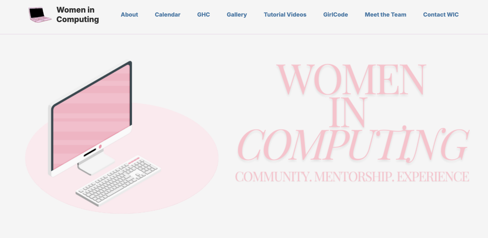
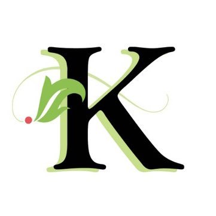
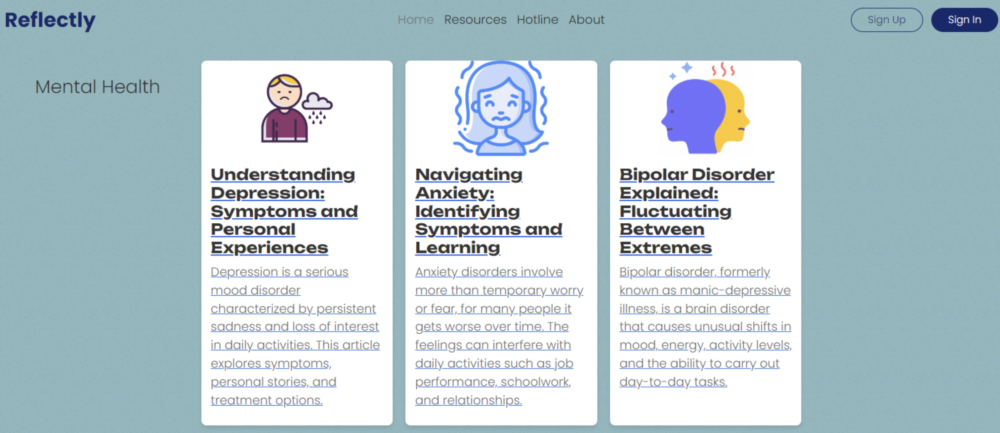

This project is part of my Research Assistant positon at KU, under Dr. Amin Enderami. The research I am working on is to identify geographical areas that are more susceptible to flash floods. My task is to design a regression model using machine learning to predict these areas using many different features/factors.
Current Projects
KU Research Assistant - Disaster Resiliency
Women in Computing - Website
As Website Rep for Women in Computing(WIC) at KU, my job is to oversee the website committee members and development of WIC's website. My duties included helping create a page for the website, managing Github -- reviewing code, accepting pull requests, handling merge conflicts, assigning issues, etc. Checkout our website here!

Finished Projects
Kanbe's Markets Data - Visualization Software
As my role as software developer for Kanbe's Markets, I was contracted a project to build a server that can be used to visualize many different financial and company needs. To complete this project, I created a REST API to fetch data from an already set up database implemented MongoDB. This API fetched data from database to then visualize the data in graphs.

Spirit AeroSystems - PowerApps Form
During my time at Spirit AeroSystems as an IT intern, I had two projects. The first project was building an online form used for employees to checkout hardware. My goal was to make this as automated as possible. To attain this goal, I implemented the forms using Microsoft's PowerApps. Using PowerApps, I created a form in which employees will fill out on a tablet. This form then connects to ActiveDirectory, where the user's location is autofilled based on what is in ActiveDirectory. This way, if employees have not accurately updated their locations in the company's database, they are alerted and saves time for the Help Desk Technicians if they need to see them.

Spirit AeroSystems - PowerBI Report
The second project was creating a PowerBI report for Spirit AeroSystems' Defense Programs. This report was previously manually generated from a user, who had to go into the database, generate a report, and manually create a pivot table. My PowerBI report has replaced a 40+ PowerPoint slide that was released on a monthly basis. It now lets program leaders access their live financial data at their fingerprints.

KU Hackathon - Reflectly
Reflectly is a mental health application designed to assist users in coping with daily challenges and promoting self-reflection. By providing a space for users to reflect on their thoughts and feelings each day, Reflectly aims to support mental well-being and foster personal growth. Additionally, Reflectly offers a virtual therapist powered by ChatGPT, which engages users in conversation and provides guidance to help them navigate their mental health journey. Checkout the link to the github repo here!
